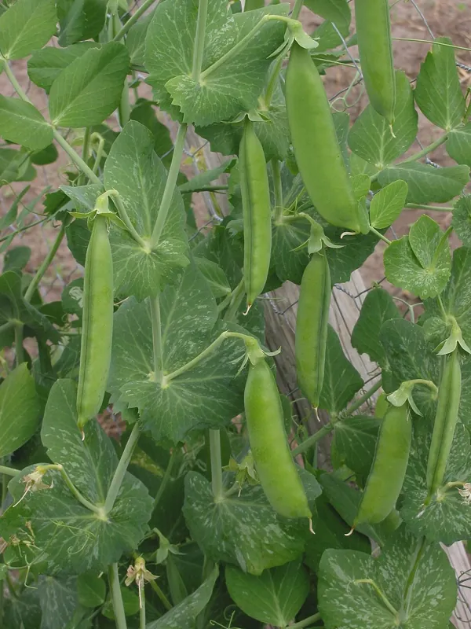

Growing peas, the crop to plant earlier than feels right
Peas punish waiting. They go in weeks before the last frost, climb with tendrils, and quit the moment summer arrives, which changes how you plan the whole row.

Photo: Rasbak · CC BY-SA 3.0, via Wikimedia Commons.
A warm coat for yourself. Sowing day is chilly, and the peas like it that way.
Low netting or a mesh trellis for climbers, something tendrils can grip (a smooth pole won’t do)
A plan for the ground afterwards. Peas finish early and leave a bed open in midsummer.
Almost everything in the vegetable garden waits for the last frost. Peas are the great exception. They shrug off a freeze and sulk in heat, and they reward the gardener willing to sow into cold ground weeks before the tomatoes dare come out.
When should I sow peas?
Peas are hardy enough to go in as soon as the soil can be worked, weeks ahead of the last frost date. The planner schedules them on that early window, well before the frost-safe date the tender crops get.
Cold-hardy annuals can be sown or transplanted before the last spring frost (hardy crops about three weeks before, half-hardy about two weeks before). Tender crops wait for the frost itself.
If you skip this, it still grows, just less well. The planner suggests it.
How it works: Cold hardiness. Hardy crops tolerate hard frost and half-hardy crops tolerate light frost, so they can occupy the ground weeks before frost-tender crops are allowed in. The offset is measured from the last spring frost.
Evidence: checked against 2 sources in the research-based literature.
Take the early date seriously because of the other end of the season. Peas stop setting pods once real heat arrives, so a late-sown row runs straight into summer and quits with half a harvest. Early in, early out is the rhythm of the crop. Sow directly, since peas hate being transplanted just as beans do, about 55–65 days (60–70 for a climbing pea) before you want to be picking.
Do peas need support?
Peas climb differently from beans, and it changes what to build. A bean wraps its whole stem around a pole. A pea reaches out with thin tendrils and grips whatever it can, so give it mesh, netting, twiggy brush, or a wire trellis. It can’t hold a smooth bamboo pole. Bush (dwarf) peas grow 45–75 cm18–30 in tall and mostly hold each other up, though something light to lean on keeps a row tidy. Climbing peas grow 0.9–1.5 m3–5 ft tall and want that netting from sowing day. The planner reads which type you picked and asks for support only when the type needs it. The staking guide covers the structures themselves.
How do I pick peas, and what do they want from the soil?
Pick often, at the stage the type is bred for: snow peas flat, snap peas plump but glossy, shelling peas when the pod fills. Like beans, a pea plant that ripens seed stops making more. They’re legumes too, so give them no nitrogen fertilizer. When they’re done, cut the spent vines off at the soil line and leave the roots and their nitrogen behind.
What's the advantage of peas finishing early?
A pea row is finished by midsummer, and the empty ground it leaves is the most valuable planting space of the year: warm soil, weeks of season left, and a legume just gone. The planner can fill that succession opening with fall roots, greens, or a second sowing of bush beans. That’s why peas earn a place even in a small bed that couldn’t spare the room all season.
Further reading
Good places to read more about the technique on this page. The grade on each card comes from that card’s own sources.